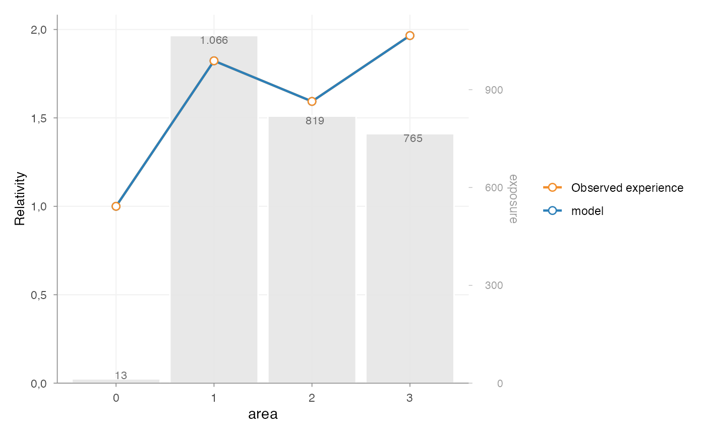

Add observed portfolio experience to a rating table
Source:R/model_rating_table.R
add_observed_experience.RdAttach the output of factor_analysis() to a rating_table() object so it
can be shown in autoplot.rating_table(). This is useful when you want to
compare fitted GLM relativities with the observed portfolio pattern for the
same rating factor.
The observed metric is scaled before plotting. With scale = "reference"
the metric is divided by the observed value of the model reference level. If
a clear reference level cannot be found, the metric is scaled to its mean.
With scale = "mean", the metric is always scaled to its mean.
Usage
add_observed_experience(
object,
experience,
metric = "risk_premium",
label = "Observed experience",
color = NULL,
scale = c("reference", "mean")
)Arguments
- object
A
rating_tableobject returned byrating_table().- experience
A
factor_analysisobject returned byfactor_analysis().- metric
Character; metric from
experienceto plot. Common choices are"frequency","average_severity","risk_premium","loss_ratio"and"average_premium", depending on which columns were supplied tofactor_analysis().- label
Character; legend label for the observed experience line.
- color
Optional line color. If
NULL, the internal risk premium color is used.- scale
Character; scaling applied before plotting. One of
"reference"or"mean".
Examples
df <- MTPL2
df$area <- as.factor(df$area)
model <- glm(
nclaims ~ area + offset(log(exposure)),
family = poisson(),
data = df
)
observed <- factor_analysis(
df,
risk_factors = "area",
claim_count = "nclaims",
exposure = "exposure"
)
rating_table(model, model_data = df, exposure = "exposure") |>
add_observed_experience(observed, metric = "frequency") |>
autoplot(risk_factors = "area")
